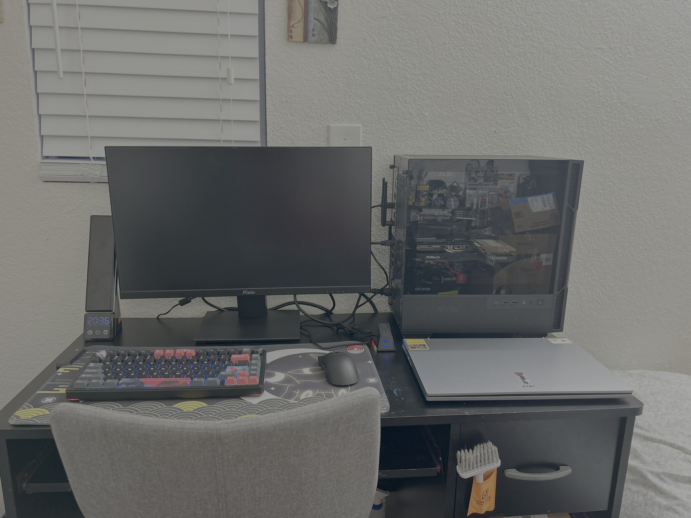

Description: I gathered the main concepts and key steps to build a functional
computer through surface level research from known creators from
YouTube. Then with resources/sites (such as
pcpartpicker)
recommended by these creators, I planned out the components to get that are budget friendly
while also being powerful enough to run basic games at a good frame rates (~120-200 fps).
The build runs on AMD's AM4 platform, using an AMD Ryzen 5 5500 processor for the CPU,
32 GB DDR4 ram (3200 MT/s), 1 TB SSD storage, and has the AMD Raedeon RX 6600 as the GPU.

Picture of my first set up with my first custom-built PC.
ITX Mini PC Build
Description: I retained my knowledge of PC building from the previous build, but this time
I had to refine assembly techniques to adapt to the challenge of a smaller build. Using
pcpartpicker, I planned out
the components to get that are compatible and powerful while maintaining decent temperatures
(to avoid overheating in a smaller form factor). The build runs on Intel LGA 1851 socket
(Intel Core Ultra 200s Arrow Lake chips), using an Intel Core Ultra 7 265kf CPU, 32 GB DDR5
ram (6400 MT/s), 2 TB SSD storage, and NVIDA GeForce RTX 5070 as the GPU.